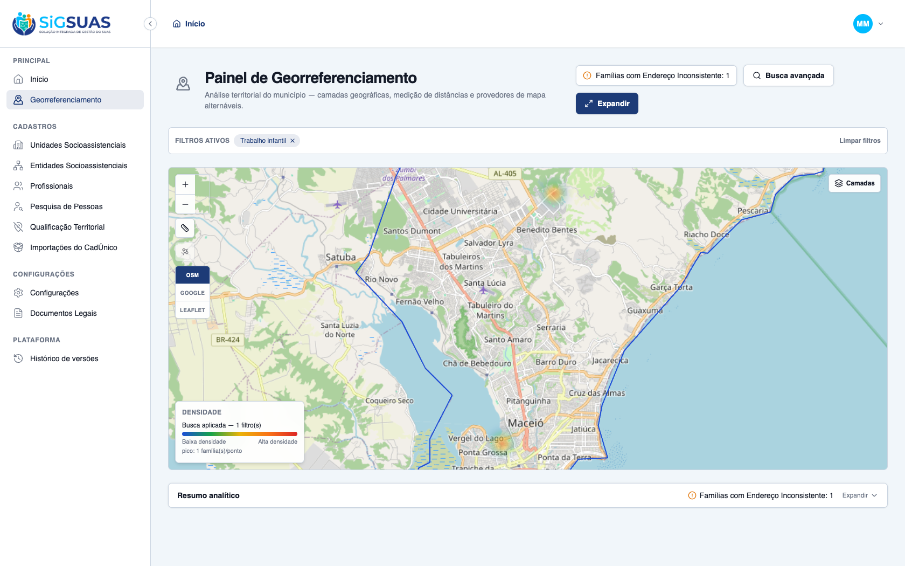
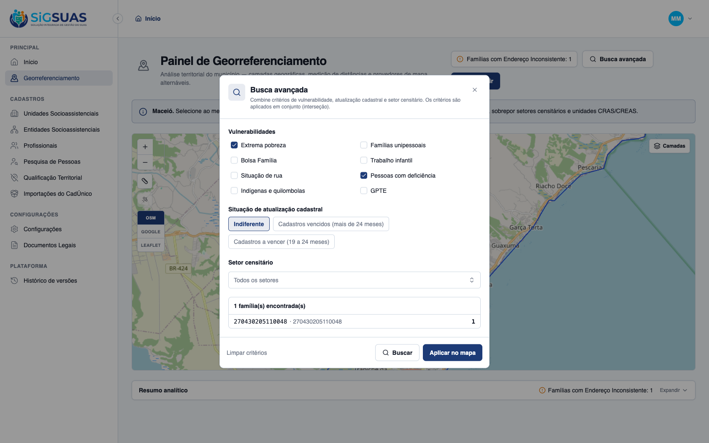
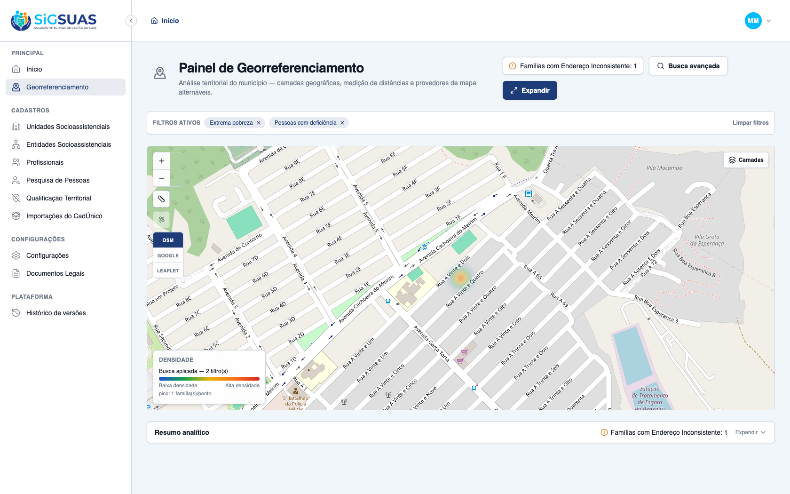

Os 2 critérios de aceite da HU #9863 sobre a filtragem combinada de vulnerabilidades e a legenda dinâmica de densidade foram verificados dirigindo o app real no navegador (tenant Maceió Geo, 12 famílias geocodificadas) e reforçados pela suíte automatizada — ambos ATENDIDOS. CA03: ao aplicar a vulnerabilidade “Ocorrência de Trabalho Infantil”, o mapa renderiza as manchas de calor e o sistema exibe, no canto inferior-esquerdo, a legenda dinâmica de densidade com o gradiente de cores quentes (amarelo→vermelho, “Baixa densidade → Alta densidade”). CA04: ao combinar “Extrema Pobreza” e “Pessoas com Deficiência”, a interseção estrita (AND / RN06) reduz o resultado de 6 e 2 famílias individuais para exatamente 1 família que atende a AMBOS os critérios simultaneamente, e o mapa foca e destaca com calor máximo estritamente o perímetro dessa família. A suíte Pest de geo passou integralmente (53 testes, 190 asserções), cobrindo a interseção AND (RN06), os filtros extreme_poverty/child_labor/has_disability e a agregação das manchas de calor.
| CA | Critério | Status |
|---|---|---|
| CA03 | Aplicação de filtro com legenda dinâmica de densidade | ATENDIDO · navegador |
| CA04 | Cruzamento cumulativo — interseção estrita (AND / RN06) | ATENDIDO · navegador + automatizado |
Critério (Gherkin): Dado que seleciono a vulnerabilidade "Ocorrência de Trabalho Infantil" e aplico, Quando o mapa renderiza as manchas de calor, Então o sistema exibe no canto da tela uma barra de legenda dinâmica explicando os níveis de adensamento representados pelas cores quentes (amarelo/vermelho).
Como foi testado: Na Busca avançada, marcado o critério Trabalho infantil e acionado Buscar → Aplicar no mapa (tenant Maceió Geo, 2 famílias com o flag child_labor em membro ativo).

Critério (Gherkin): Dado que marco "Extrema Pobreza" e "Pessoas com Deficiência" juntos e aplico, Quando o mapa se atualiza, Então a intensidade máxima de calor destaca estritamente os perímetros onde residem famílias que atendem a ambos os critérios simultaneamente.
Como foi testado: Na Busca avançada, marcados juntos Extrema pobreza e Pessoas com deficiência (a janela informa que “os critérios são aplicados em conjunto — interseção”) e acionado Buscar → Aplicar no mapa. No tenant Maceió Geo: 6 famílias em extrema pobreza e 2 com deficiência individualmente.


PASS Tests\Unit\Services\Geo\GeoPanelQueryServiceTest ✓ it filters extreme_poverty by per_capita_income against the configu… 0.37s ✓ it filters single_person as exactly one ACTIVE member 0.03s ✓ it filters receives_pbf on the family flag 0.01s ✓ it filters member flags (child_labor, homeless_situation, has_disab… 0.05s ✓ it filters indigenous_quilombola as an OR between the two family fl… 0.02s ✓ it filters gpte by any traditional group, refinable by traditional_… 0.02s ✓ it intersects multiple criteria with AND (RN06) 0.02s ✓ it classifies expired as more than 24 months since source_updated_a… 0.02s ✓ it classifies expiring as between 19 and 24 months since source_upd… 0.02s ✓ it restricts by sector_uuid (SQLite fallback: sector city = family… 0.02s ✓ it aggregates by sector, groups anonymous points and computes the b… 0.02s ✓ it ignores families without an active locatable address point 0.02s ✓ it scopes every aggregate to the given tenant (RN01) 0.02s ✓ it validates that a sector belongs to the tenant municipality (RN08… 0.01s PASS Tests\Feature\Api\Client\GeoPanelExportTest ✓ it creates a pending export with the immutable filters snapshot and… 0.06s ✓ it blocks the export with 422 and the guidance message when no effe… 0.02s ✓ it requires the map image for pdf exports and stores it under the t… 0.03s ✓ it rejects a map image that is not a base64 png 0.03s ✓ it lists and shows only the exports of the active tenant, 404 on cr… 0.03s ✓ it downloads a completed export and refuses one still pending 0.03s ✓ it generates the xlsx from the filters snapshot with the tenant pre… 0.04s ✓ it generates the pdf composing the map image sent by the client (CA… 0.13s ✓ it marks the export as failed with the error message when the job f… 0.02s ✓ it neutralizes formula injection on every text cell of the spreadsh… 0.01s PASS Tests\Feature\Api\Client\GeoPanelLayerDataTest ✓ it merges a globally published layer after the builtins, keeping th… 0.02s ✓ it shows a selected-audience layer only to the covered tenant (CA43… 0.03s ✓ it never lists draft or inactive layers on the tenant panel (CA48/R… 0.02s ✓ it reflects audience/status changes on the very next fetch — no cac… 0.02s ✓ it executes the layer criteria strictly under each consumer tenant… 0.04s ✓ it answers 404 (never 403) for a layer that is not visible to the t… 0.02s ✓ it serves the CURRENT definition of the layer — an admin edit refle… 0.03s ✓ it shapes the payload by representation: markers, boundaries and he… 0.03s ✓ it denies the layer data endpoint to an operator without the geo_pa… 0.02s PASS Tests\Feature\Api\Client\GeoPanelTest ✓ it returns the tenant municipality with geometry, centroid and the… 0.05s ✓ it responds 409 geo_panel.city_unavailable when the tenant has no r… 0.02s ✓ it responds 409 when the municipality geometry exists but is inacti… 0.02s ✓ it lists exactly the 3 builtin layers with the stable contract (CA2… 0.02s ✓ it serves the census sectors of the tenant municipality as a GeoJSO… 0.02s ✓ it serves the tenant social units as anonymous points with type_cod… 0.03s ✓ it applies the AND intersection of combined criteria scoped to the… 0.04s ✓ it never leaks families from another tenant in the search (RN01/CA3… 0.03s ✓ it returns an empty payload when no record matches, so the map stay… 0.03s ✓ it rejects a search without any effective criterion (Seção 10 — reg… 0.02s ✓ it rejects a sector_uuid that belongs to another municipality (RN08… 0.02s ✓ it always includes the fixed RN07 indicator in the summary, even wi… 0.03s ✓ it aggregates the summary by census sector under the active filters… 0.03s ✓ it denies every geo-panel endpoint to the base operator without the… 0.02s ✓ it grants the full panel to the operator once the geo_panel_viewer… 0.03s ✓ it grants the full panel to the Master without any add-on role (RN2… 0.03s ✓ it creates a panel-scoped google map tiles session for the geo_pane… 0.04s ✓ it denies the panel map tiles session to the base operator without… 0.03s ✓ it does not let the geo_panel_viewer role in Tenant A open the pane… 0.04s ✓ it exposes geo_panel_viewer as an add-on role, never a hierarchy po… 0.02s Tests: 53 passed (190 assertions) Duration: 2.13s